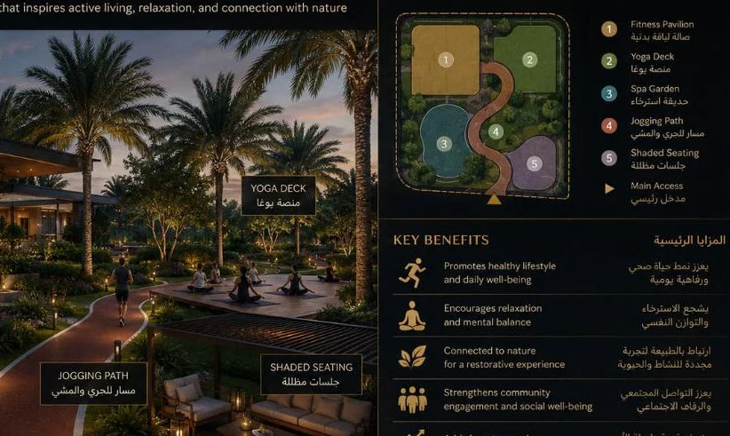

← Back to Projects
12 • Residential + Developer Strategy
Al Rehab Oasis
A residential oasis for ADEC that transforms a fixed land parcel into a branded community story built around privacy, landscape, wellness and daily life.
THE FIRST PROJECT BUILDS THE BRAND
Design Narrative
A developer’s first project can do more than sell homes; it can establish what the market should expect from the name behind them.
The project is framed as ADEC’s first success story: not just a collection of villas, but the first chapter of a developer brand people can recognise, remember and trust.
Lifestyle core, smart loop circulation, villa mix, clubhouse, wellness, green spine and signature arrival.
Smart loop circulationLifestyle coreClubhouse + wellnessVilla mixPremium + standard villasSignature garden
Strategic Lens — Developer Brand + Community Value
How can a first residential project create both a desirable lifestyle and a credible developer identity?
Design the lifestyle core first, then organise villa hierarchy, movement and landscape around it.
Green spine, clubhouse, wellness, smart-loop circulation and product tiers turn a villa plan into a complete community proposition.
The spaces between villas carry the project’s brand promise as strongly as the villas themselves.
A strong first project builds value for today’s inventory and for the developer’s next chapter.
Curated Visual Gallery
Al Rehab Oasis
A visual sequence of architecture, atmosphere, movement and detail.



Key Features
- Smart loop circulation
- Lifestyle core
- Clubhouse + wellness
- Villa mix
- Premium + standard villas
- Signature garden
- Retail promenade
- Arrival gateway
Spaces + Experiences
- Main gate
- Premium villas
- Standard villas
- Clubhouse
- Wellness pavilion
- Kids area
- Retail promenade
- Green spine